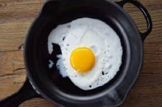
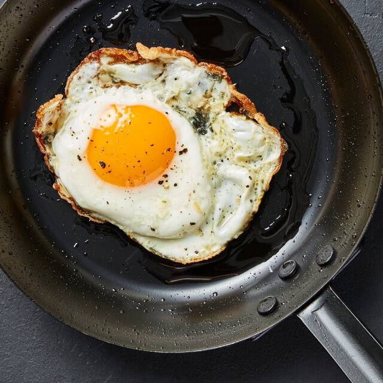
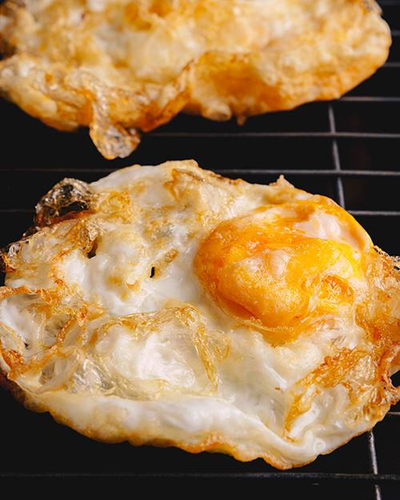
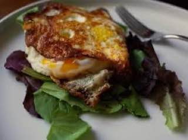

1. Sunny-Side Up: Fried eggs cooked on one side only, with the yolk remaining intact and visible.

2. Over-Easy: Fried eggs flipped and cooked briefly on the other side, with the yolk still runny.

3. Over-Medium: Fried eggs flipped and cooked a bit longer than over-easy, with a partially set yolk

4. Over-Hard: Fried eggs flipped and cooked until the yolk is fully set and firm.